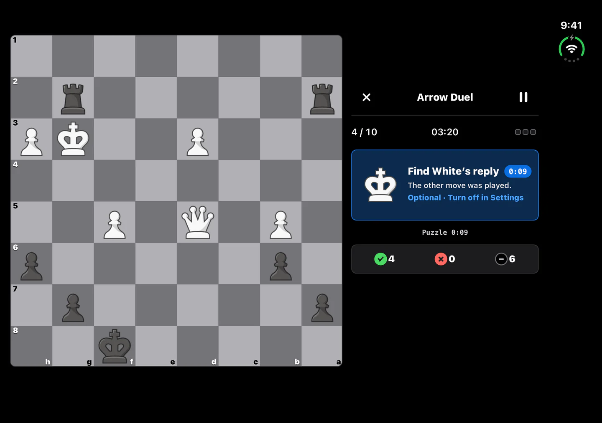

Ejercicios de ajedrez para entrenar con foco.
Resuelve Sprints cortos ajustados a tu Rating. Compara jugadas en Duelo de Flechas y vuelve a los ejercicios fallados con Repaso programado.
Gratis. Sin conexión. Sin anuncios ni cuenta.


El Repaso programado devuelve los ejercicios que conviene revisar.
Los ejercicios fallados y dudosos regresan cuando toca. Repite cualquier posición libremente para ver la línea de nuevo sin alterar tu calendario de Repaso.

Las Series Enfocadas parten de una estimación inicial y de tus decisiones.
Previsualiza una Serie Enfocada a partir de una estimación inicial en tu Perfil Táctico, o elige tú mismo los temas, el ritmo y la dificultad.


Práctica privada con más espacio para el tablero.
Chessticize funciona sin conexión en móvil, sin anuncios ni cuenta de Chessticize. En iPhone y iPad, la sincronización privada opcional por iCloud mantiene tu progreso unido entre tus dispositivos Apple y puede desactivarse en cualquier momento.
